LÄMPÖPUMPPUJEN JA AURINKOSÄHKÖJÄRJESTELMIEN KOMMUNIKAATIORAJAPINNAT JA NIIDEN HYÖDYNTÄMISMAHDOLLISUUDET
Ilmari Marttila ja Niko Kangasniemi
Kandidaatintyön sisältö
- Aurinkosähköjärjestelmät sähkön tuottajina
- Lämpöpumput sähkön käyttäjinä
- Rajapinnat – eri abstraktiotasot
- Sidosryhmät ja niiden tarpeet rajapintojen näkökulmasta
- Sovellukset
Aurinkosähköjärjestelmät sähkön tuottajina
Lämpöpumput sähkön käyttäjinä
Lämpöpumpun toimintaperiaate

Eri moottorityyppejä käytetään kompressorin pyörittämiseen
| Suoraan verkkojännitteeseen kytketty oikosulkumoottori | Tehopiikki käynnistyessä |
| Oikosulkumoottori pehmokäynistimellä | Ei niin suurta tehopiikkiä |
| Oikosulkumoottori taajuusmuuttajakäyttöllä | kompressorin nopeutta ja täten sen ottamaa tehoa kyetään säätämään. Ei tehopiiikejä |
Myös muun tyyppiset voimanlähteet ovat mahdollisia
Erilaisia rajapintoja
Automaatiossa käytetty palvelin–asiakas-mallin viestintäprotokolla.
Modicon aloitti kehityksen vuonna 1979. Nykyään Modbus-standardia ylläpitää Modbus Organization.
Kommunikointi perustuu asiakkaan lähettämiin määrämuotoisiin pyyntöihin.
Pyynnöillä voidaan lukea tai muokata palvelinlaitteella sijaitsevien rekistereitä.
IEC 61850
- Sähköasemien standardi, jossa on määritelty esimerkiksi yleisiä tietomalleja uusiutuville energianlähteille laiteriippumattomuuden mahdollistamiseksi
- 61850-90-7 -laajennos sisältää myös toiminnallisia funktioita inverttereitä varten, esimerkiksi verkkoa tukevia ominaisuuksia
- Suomessa laajasti käytössä sähköasemien automaatiossa
SunSpec on SunSpec Alliancen määrittelemä standardi aurinkoinverttereille ja energiavarastoille.
- Toimii Modbus-protokollan ylitse, HTTP/XML:llä ja OPC:llä, mutta suurin käyttö on Modbusin avulla
- Perustuu IEC 61850 sähköasemastandardiin
- Mahdollistaa inverttereiden ja energiavarastoiden (etä)ohjauksen standardiin pohjautuvalla tiedonvaihdolla
- Suomalaisen aurinkosähköjärjestelmiä asentava Solarigon käyttämistä 5:stä valmistajasta kaikilla on mahdollista käyttää SunSpec Modbusia kommunikaatiossa
IEEE 1815 / Distributed Network Protocol 3
- Suunniteltu alunperin sähköasemien automaatioon, mutta nykyisin käytössä myös vesiteollisuudessa
- Markkinajohtaja sähköasemien kommunikaatiossa Pohjois-Amerikassa
- Vuonna 2018 julkaistussa dokumentissa määriteltiin IEC 61850:n määrittelemät toiminnalliset ominaisuudet myös tälle standardille. Samassa dokumentissa julkaistiin linkitys 61850-7-420 tietomalleihin.

Saksalainen lämpöpuppuyhdistys BWP
Määrittelee neljä toimintatilaa
Sidosryhmät ja niiden tarpeet rajapintojen näkökulmasta
Sovellukset
Etämonitorointi ja -ohjaus
Monitorointi vain tila- tai historiatietojen tarkkailua, ohjaus sisältää lisäksi asetusarvojen muuttamista sekä järjestelmän käynnistämistä/pysäyttämistä.
- Asiakaspalvelu / laitteistohuolto
- Verkon huoltotilanteet
- Muiden sovellusten mahdollistaminen
Kysyntäjousto
Keskitetty energiantuotanto - hajautettu energiantuotanto
Perustuotanto pienenee vanhojen laitosten poistuessa käytöstä
Virtuaalivoimalat
Koostuu pienistä tuotantoyksiköistä tai yhdestä tai useammasta ohjattavasta kuormasta.
Akullisia aurinkosähköjärjestelmiä voidaan hyödyntää kuluttajana tai tuottajana, riippuen tarpeesta. Ne ovat myös nopeaa säätövoimaa, sillä teho on heti saatavissa akulta.
Lämpöpumppupoolia ohjaamalla voidaan hyödyntää lämmitettävien kohteiden lämmönvarastointikykyä.
Huipputehon rajoittaminen
Verkko mitoitetaan huipputehon perusteella
Mahdolliset tehotariffit huipputehojen rajoittamiseksi
Tehon rajoittaminen pidemmän sähkökatkon jälkeen verkon kuormituksen pienentämiseksi
Aurinkosähkön kustannustehokas hyödyntäminen
Aurinkosähkön myynnistä saatava korvaus pienempi kuin sähkön hinta kuluttajalle
Inverttereissä mahdollisuus ostaa lisävarusteena releohjaus
Kiinteistöautomaation hyödyntäminen asiassa vaatii erillisen (reaaliaikaisen) sähkömittarin